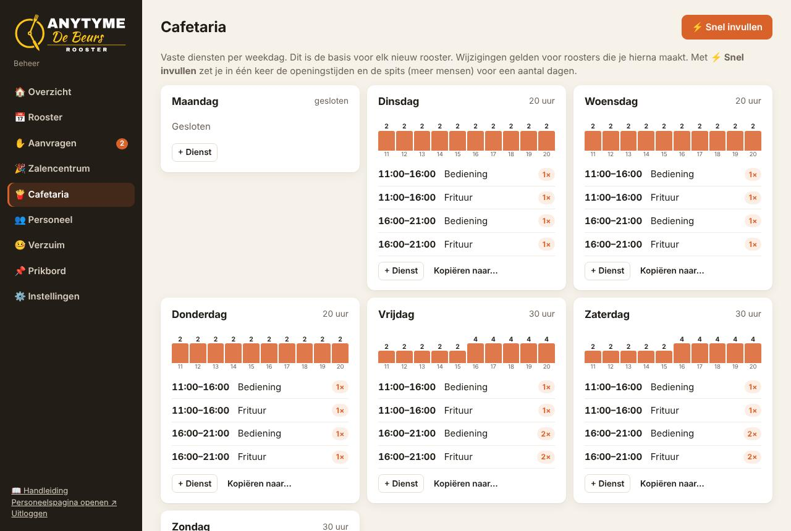
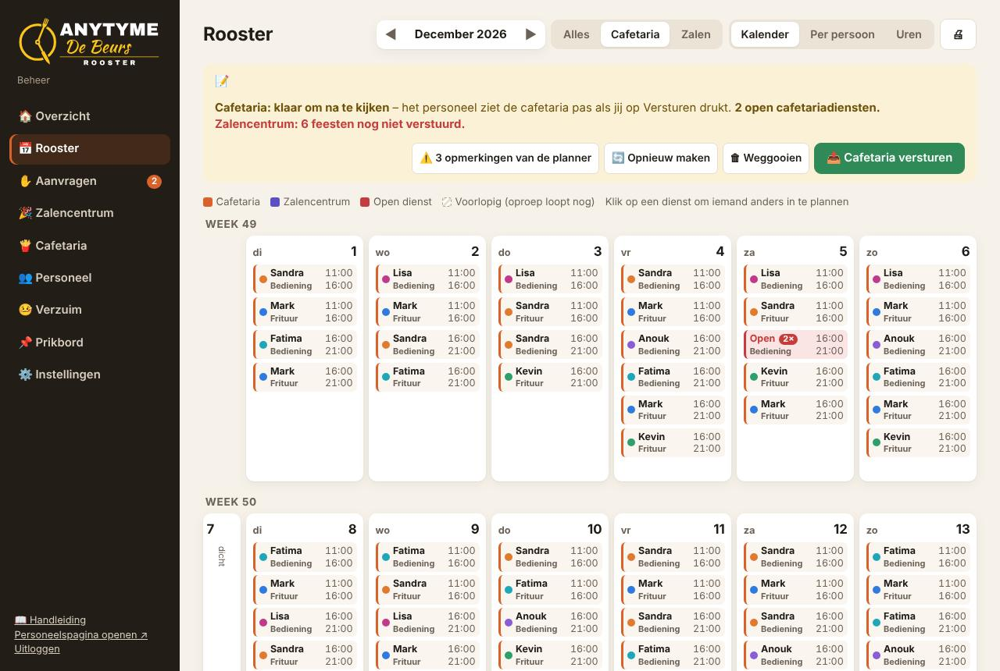
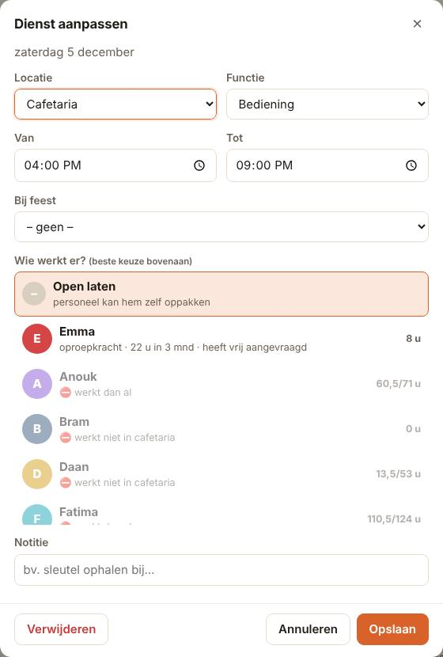
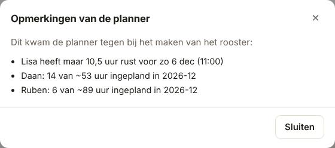
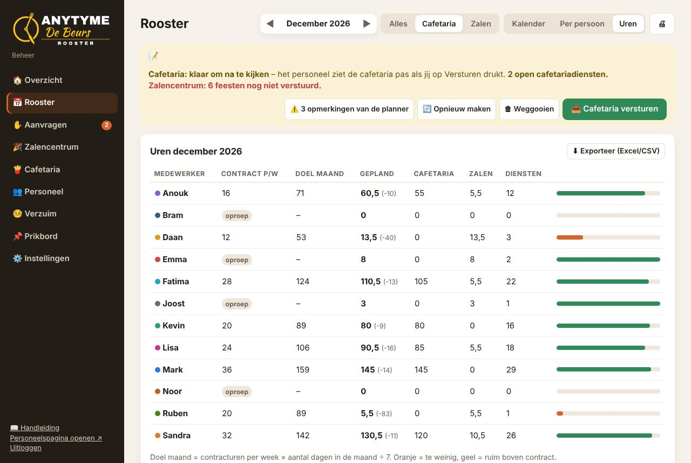
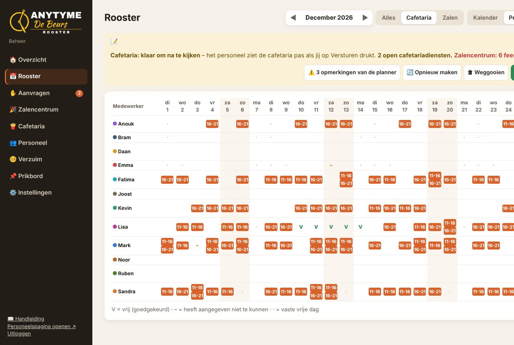
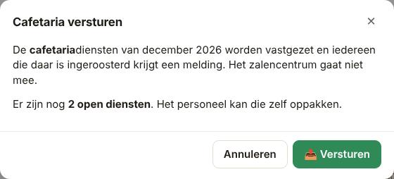

1Eerst invullen (eenmalig)
De planner kan alleen een goed cafetariarooster maken als hij weet wie er werkt en welke diensten er zijn. Zolang dat niet is ingevuld, blijven bijna alle diensten open (rood). Dat zag je in december: 256 open diensten.
A. Bij Personeel – voor iedereen die in de cafetaria werkt
| Veld | Waarom belangrijk voor de cafetaria |
|---|---|
| Werkt in: Cafetaria | Zonder dit vinkje wordt iemand nooit in de cafetaria gepland. |
| Functies | Moeten precies passen bij de cafetariadiensten (bijv. Keuken, Frituur, Afwas, Bezorging, Kassa/bediening). |
| Contracturen per week | Vast personeel: de planner probeert dit vol te plannen. 0 = oproepkracht: die wordt in de cafetaria niet vanzelf ingepland, maar kiest zelf via “Ik kan” of pakt open diensten op. |
| Vaste werkdagen | Op deze dagen krijgt iemand voorrang. Iemand met 0 uur maar wél vaste werkdagen wordt op die dagen toch gepland. |
| Kan nooit op / Liever niet op | Bijv. schooldagen of een vaste vrije dag. |
| Max. dagen per week | Meer dagen plant de app niet. |
| Ervaring, geboortedatum, niveau ★ | Zodat nieuwe en jonge mensen niet zonder ervaren collega staan, en sterk/minder sterk gemengd wordt. |
B. Bij Cafetaria – de vaste diensten
Met ⚡ Snel invullen zet je per dag de openingstijden, de wissel en de spits erin. Bijvoorbeeld: di t/m vr 10:00–20:00, za en zo 11:00–20:00, maandag dicht. Het balkje per dag laat zien hoeveel mensen er per uur staan.

C. Sluitingsdagen
Onderaan de pagina Cafetaria: feestdagen en vakanties waarop de cafetaria dicht is (bijv. 1e en 2e kerstdag). Op die dagen worden geen diensten gemaakt.
2Het rooster staat klaar
Ongeveer 3 weken voor de nieuwe maand maakt de app het rooster. Je krijgt een bericht en bij Te doen staat “Cafetariarooster … nakijken en versturen”. Tik erop: je komt meteen bij Rooster → Cafetaria.

Het personeel ziet nog niets. Je kunt rustig alles aanpassen.
↑ naar boven3Controle 1: open diensten
Open diensten zijn rood (bijv. Open 2× Bediening op za 5 december). Tik erop:
- Je ziet wie het kan doen, met de beste keuze bovenaan, en waarom (bijv. oproepkracht · 22 u in 3 mnd).
- Wie niet kan, staat er grijs bij met de reden (werkt dan al, werkt niet in cafetaria, vaste vrije dag…).
- Kies iemand, of laat hem open. Na het versturen kan het personeel open diensten zelf oppakken.

4Controle 2: opmerkingen van de planner
Tik op ⚠️ 3 opmerkingen van de planner. Daar staat wat niet helemaal gelukt is.

| Opmerking | Wat doe je? |
|---|---|
| Lisa heeft maar 10,5 uur rust voor zo 6 dec | Laat avond, vroeg weer beginnen. Prima als Lisa dat goed vindt; anders de dienst van zo 6 dec aan iemand anders geven. |
| Ruben: 6 van ~89 uur ingepland | Ruben komt veel tekort. Kijk bij Personeel: heeft hij functies die in de cafetaria voorkomen? Staat “Cafetaria” aangevinkt? (In de demo heeft Ruben Keuken/Afwas, terwijl er alleen Bediening- en Frituurdiensten zijn.) |
| … werkt 7 dagen achter elkaar | Geef één van die diensten aan iemand anders. |
5Controle 3: uren per persoon
Kies bovenaan Uren. Per medewerker zie je het contract, het doel voor de maand en wat er gepland is.

- Iedereen met een contract moet ongeveer op zijn uren zitten. Een paar uur minder is normaal, omdat de zalen-uren er nog bij komen.
- Komt iemand veel tekort (zoals Ruben en Daan hier)? Geef die persoon een paar open diensten, of diensten van iemand die al veel heeft.
- Met ⬇ Exporteer krijg je een Excel-bestand voor de salarisadministratie.
6Controle 4: verdeling per persoon
Kies bovenaan Per persoon. Per medewerker zie je per dag de dienst.

Let op:
- Zijn de weekenden (gekleurde kolommen) eerlijk verdeeld?
- Heeft niemand twee diensten op één dag die hij niet wil (bijv. 11-16 én 16-21)?
- Klopt het met wat je weet: wie op vakantie is, wie op school zit…
7Controle 5: ploeg en dichte dagen
- Staat er een gele balk 🌱 … nieuw of jong personeel zonder ervaren collega? Tik op Bekijken en zet op die momenten een ervaren collega (18+) erbij.
- Dagen waarop de cafetaria dicht is, staan smal met dicht (in het voorbeeld maandag 7 december). Klopt dat met de feestdagen?
8Versturen
- Zorg dat bovenaan het tabblad Cafetaria gekozen is.
- Tik op 📤 Cafetaria versturen.
- Je ziet nog één keer hoeveel diensten open zijn. Tik op 📤 Versturen.
- Iedereen die ingeroosterd is, krijgt een bericht. Daarna kun je met één tik ook een bericht in de WhatsApp-groep zetten.

9Controlelijst om af te vinken
| Controle | |
|---|---|
| ☐ | Iedereen van de cafetaria staat bij Personeel met Werkt in: Cafetaria, de juiste functies, contracturen en vaste werkdagen. |
| ☐ | De vaste diensten (openingstijden en spits) kloppen bij Cafetaria. |
| ☐ | Sluitingsdagen (feestdagen, vakantie) staan erin. |
| ☐ | Alle vrij-aanvragen voor die maand zijn goedgekeurd of afgewezen (Aanvragen). |
| ☐ | Open diensten (rood) bekeken: ingevuld of bewust open gelaten. |
| ☐ | ⚠️ Opmerkingen van de planner gelezen. |
| ☐ | Uren: niemand ver onder of boven zijn contract. |
| ☐ | Per persoon: weekenden eerlijk verdeeld, geen rare dubbele diensten. |
| ☐ | Geen gele balk 🌱 zonder ervaren collega (of bewust zo gelaten). |
| ☐ | Tabblad Cafetaria → 📤 Cafetaria versturen. |